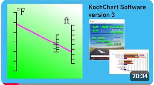
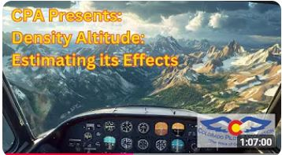

KochChart version 4.0.4 has added "Auto-Update". Now you can leave your Koch chart, your Altitude chart and your Carburetor Ice Potential chart open, and the graphics (along with the Koch tab) will be auto-updated at an interval of your choosing (provided a valid station METAR can be retrieved).
KochChart version 4.0.3 has added a chart indicating the potential for carburetor icing. This chart is based on the carburetor icing probability chart published by the Civil Aviation Safety Authority (CASA) of Australia.

KochChart version 4 has been released! The new version allows the user to export the charts and values from a session as a .pdf file, which can then be sent to your email-enabled device.
Welcome! This site is your source for the KochChart educational software tool. This tool compares various estimating methods (including, but not limited to, the Koch Chart) for assessing the impact of density altitude on take-off and rate-of-climb performance. In addition, the tool can estimate the effects of wind, runway slope and runway surface on take-off distance.
This is a free educational tool created to raise awareness about the significant effects density altitude has on aircraft performance. These effects are especially important for pilots flying at high-elevation airports.
Why the name 'KochChart'? This program started as a relatively simple digital version of the venerable Koch Chart nomograph (the roots of which are somewhat obscure). The user would type in key parameters (air temperature and pressure altitude) to produce the chart. But eventually automated METAR collection, others' estimating methods (besides Koch), tables, comparison graphs, and even carburetor ice potential were included.
The algorithms for density altitude effects used in this software were originally developed for light, single-engine, normally aspirated (i.e., not-turbocharged) piston aircraft. They are not applicable to other types of aircraft.
You can download the KochChart software at this page. Look for the release withafter the release name.
Currently, the software is only available for Windows.
You can view an instructional video here:

And the software was also featured in a Colorado Pilot's Association webinar, which included a detailed demonstration of the software. It
can be viewed here (the software discussion starts at around the 32-minute point in the video):
.
The KochChart software is free, but if you would care to make a donation
to its maintenance and future improvements, you can do so here. There is
absolutely no obligation to do so. I hope you enjoy the software, and gain
a better appreciation for the effects of density altitude on aircraft performance.
--Jim Greer
Have a question or feedback?
Contact me via GitHub
...or use the Contact Form below.